toyexample.Rmd
set.seed(12345678)
r=0.8
mu = c(0,0,0,0,0,0)
stddev = rep(c(8,4,2),2)
cormatx = diag(1,6,6)
cormatx[1,5] <- r
cormatx[5,1] <- r
covmatx = stddev %*% t(stddev) * cormatx
## Generate scores
xi = mvrnorm(n = 100, mu = mu, Sigma = covmatx, empirical = FALSE)
I=100
## X
visit.X =rpois(I,1)+3
time.X = unlist(lapply(visit.X, function(x) scale(c(0,cumsum(rpois(x-1,1)+1)))))
J.X = sum(visit.X)
xi.X = xi[,1:3]
V.x=144
phix0 = matrix(0,V.x,3); phix0[1:12, 1]<-.1; phix0[1:12 + 12, 2]<-.1; phix0[1:12 + 12*2, 3]<-.1
phix1 = matrix(0,V.x,3); phix1[1:12 + 12*3, 1]<-.1; phix1[1:12 + 12*4, 2]<-.1; phix1[1:12 + 12*5, 3]<-.1
phixw = matrix(0,V.x,3); phixw[1:12 + 12*6, 1]<-.1; phixw[1:12 + 12*7, 2]<-.1; phixw[1:12 + 12*8, 3]<-.1
zeta.X = t(matrix(rnorm(J.X*3), ncol=J.X)*c(8,4,2))*2
X = phix0 %*% t(xi.X[rep(1:I, visit.X),]) + phix1 %*% t(time.X * xi.X[rep(1:I, visit.X),]) + phixw %*% t(zeta.X) + matrix(rnorm(V.x*J.X, 0, .1), V.x, J.X)
## Y
visit.Y=rpois(I,1)+3
time.Y = unlist(lapply(visit.Y, function(x) scale(c(0,cumsum(rpois(x-1,1)+1)))))
K.Y = sum(visit.Y)
V.y=81
phiy0 = matrix(0,V.y,3); phiy0[1:9, 1]<-.1; phiy0[1:9 + 9, 2]<-.1; phiy0[1:9 + 9*2, 3]<-.1
phiy1 = matrix(0,V.y,3); phiy1[1:9 + 9*3, 1]<-.1; phiy1[1:9 + 9*4, 2]<-.1; phiy1[1:9 + 9*5, 3]<-.1
phiyw = matrix(0,V.y,3); phiyw[1:9 + 9*6, 1]<-.1; phiyw[1:9 + 9*7, 2]<-.1; phiyw[1:9 + 9*8, 3]<-.1
zeta.Y = t(matrix(rnorm(K.Y*3), ncol=K.Y)*c(8,4,2))*2
xi.Y = xi[,4:6]
Y = phiy0 %*% t(xi.Y[rep(1:I, visit.Y),]) + phiy1 %*% t(time.Y * xi.Y[rep(1:I, visit.Y),]) + phiyw %*% t(zeta.Y) + matrix(rnorm(V.y*K.Y ,0, .1), V.y, K.Y)
x = list(X=X, time=time.X, I=I, J=sum(visit.X),visit=visit.X)
y = list(X=Y, time=time.Y, I=I, J=sum(visit.Y),visit=visit.Y)
re = lcca.linear(x=x,y=y)## Wilks' Lambda, using F-approximation (Rao's F):
## stat approx df1 df2 p.value
## 1 to 4: 0.3635147 6.913769391 16 281.7023 2.345901e-13
## 2 to 4: 0.9176709 0.904261906 9 226.4882 5.222746e-01
## 3 to 4: 0.9749770 0.599311064 4 188.0000 6.635830e-01
## 4 to 4: 0.9999414 0.005566361 1 95.0000 9.406834e-01The LCCA is estimates as \(u_m = (u_{m0}^{\top}, u_{m1}^{\top})^{\top}\) and \(v_m = (v_{m0}^{\top}, v_{m1}^{\top})^{\top}\).
To understand the longitudinal patterns, it is presented as \(u_{m0} + t u_{m1}\) and \(v_{m0} + t v_{m1}\).
##
## Attaching package: 'gplots'## The following object is masked from 'package:stats':
##
## lowess
time=c(0,1,2,3,4)
matx = (re$xcv_x0 %*% t(rep(1,length(time)))+ re$xcv_x1 %*% t(matrix(time)));colnames(matx)<-time
maty = (re$xcv_y0 %*% t(rep(1,length(time)))+ re$xcv_y1 %*% t(matrix(time)));colnames(maty)<-time
par(mfrow=c(1,2), mar=c(2,1,1,1))
image(t(matx), xaxt='n', yaxt='n', main='LCV X',col=bluered(200),breaks=c(-100:100)/100*0.7)
mtext(time, side=1, line=0, at=time/4);mtext('Time', side=1, line=1, at=0.5)
image(t(maty), xaxt='n', yaxt='n', main='LCV Y',col=bluered(200),breaks=c(-100:100)/100*0.7)
mtext(time, side=1, line=0, at=time/4);mtext('Time', side=1, line=1, at=0.5)